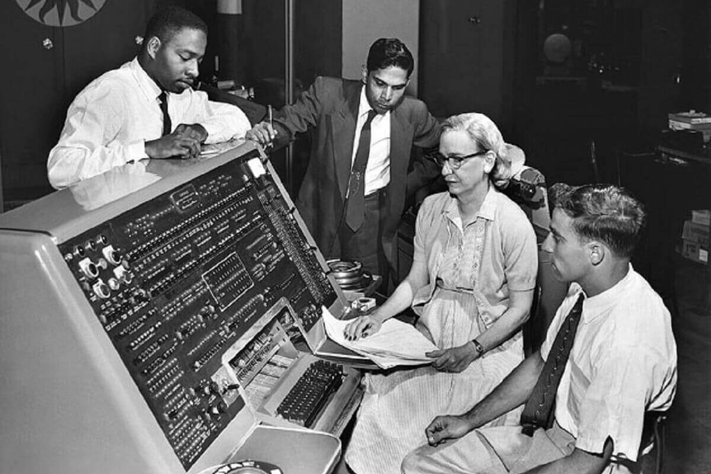

At the Smithsonian Institution
Here are some facts about Grace Hopper's life:
- 1906 - Born in New York City.
- 1928 - Graduated from Vassar College with a bachelor's degree in mathematics and physics.
- 1934 - Earned a Ph.D in mathematics from Yale.
- 1943 - Was sworn into the United States Navy Reserve. She had to get an exemption to enlist, because she was 15 pounds below the Navy minimum weight of 120 pounds.
- 1944 - Graduated first in her class, and was assigned to the Bureau of Ships Computation Project at Harvard University as a lieutenant, junior grade.
- 1949 - Hopper became en employee of the Eckert–Mauchly Computer Corporation as a senior mathematician and joined the team developing the UNIVAC I
- 1952 - Published her first paper on compilers. The program was known as the A compiler and its firs verwion was A-0.
- 1954 - Hopper was named the company's first director of automatic programming, and her department released some of the first compiler-based programming languages.
- 1967-1977 - Served as the director of the Navy Programming Languages Group in the Navy's Office of Information Systems Planning and was promoted to the rank of captain in 1973.
- 1985 - Hopper became one of the Navy's few female admirals.
- 1986 - Admiral Hopper took mandatory retirement from the Navy. At a celebration held in Boston to commemorate her retirement, Hopper was awarded the Defense Distinguished Service Medal, the highest non-combat decoration awarded by the Department of Defense.
- 1986-1992 - Following her retirement from the Navy, she was hired as a senior consultant to Digital Equipment Corporation (DEC).
- 1992 - Died at age 85.